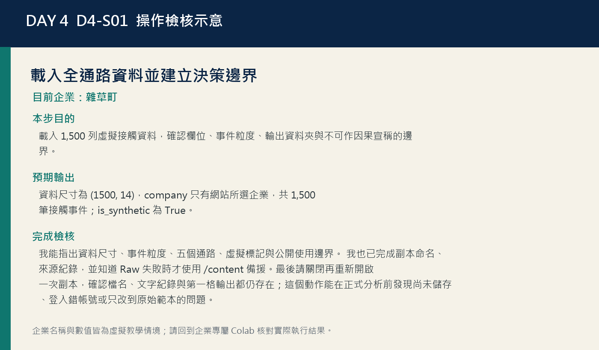
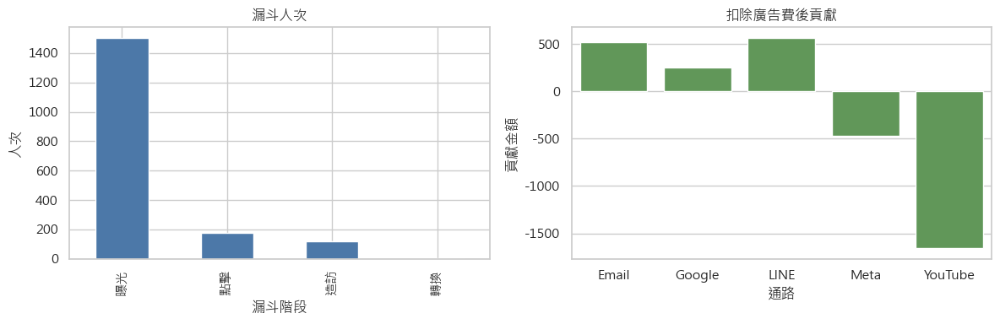
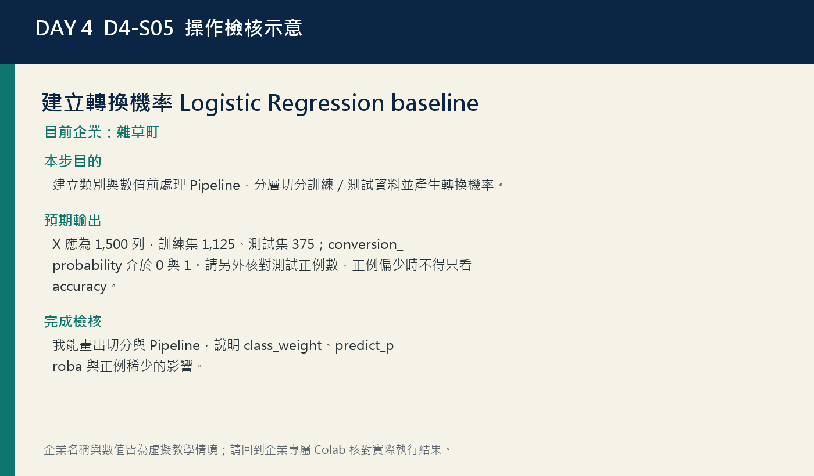
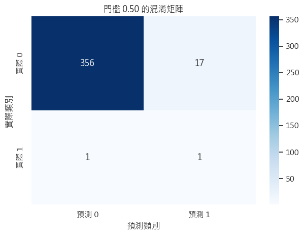
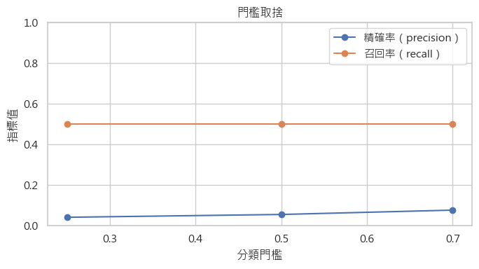

雜草町｜DAY 4
在錯誤成本與百萬元預算限制下選擇名單門檻和通路配置。
分析對象：Email、LINE、Google、Meta 與 YouTube 的漏斗事件與成本。
資料線索：AUC 衡量排序能力，實際門檻仍要比較 precision、recall、FP、FN 與成本。
今日交付：雜草町百萬元投放與實驗方案
DAY 4 / 4
從漏斗 KPI、轉換門檻到可驗證的預算實驗
之後仍可切換；選擇只保存在這個瀏覽器。
雜草町｜Day 4 專屬下載
義大開發｜Day 4 專屬下載
盛香珍 × 亙美質珍｜Day 4 專屬下載
寶島眼鏡｜Day 4 專屬下載
當日驗收將於 7/16 16:00（台灣時間）開放。
16:00 開放Selected enterprise
切換上方企業後，本任務、故事、圖表與下載資源會同步更新。
雜草町｜DAY 4
分析對象：Email、LINE、Google、Meta 與 YouTube 的漏斗事件與成本。
資料線索：AUC 衡量排序能力，實際門檻仍要比較 precision、recall、FP、FN 與成本。
今日交付：雜草町百萬元投放與實驗方案
義大開發｜DAY 4
分析對象：五個數位通路的曝光、點擊、造訪、轉換與成本事件。
資料線索：漏接高價旅遊意向者的代價可能高於多聯繫一位低意願名單。
今日交付：義大開發百萬元投放與實驗方案
盛香珍 × 亙美質珍｜DAY 4
分析對象：五個數位通路的漏斗、轉換機率、廣告成本與商品價值。
資料線索：低 CPA 不代表增量效果；預算方案必須保留對照與停止條件。
今日交付：盛香珍 × 亙美質珍百萬元投放與實驗方案
寶島眼鏡｜DAY 4
分析對象：五個通路的接觸事件、轉換價值、錯誤成本與預算情境。
資料線索：門檻不是固定答案；誤打擾與漏掉高價值顧客的成本必須透明設定。
今日交付：寶島眼鏡百萬元投放與實驗方案
Business story
主要情境會依上方選擇切換；四家企業共通的分析方法可展開查閱。
雜草町
雜草町要在多個數位通路間配置有限預算，同時避免把過多低意願名單交給營運。你會先檢查漏斗，再建立分類模型、比較門檻成本並保留探索額度，最後提出可用 A/B test 驗證的方案。
義大開發
義大開發要把百萬元預算投向能帶來旅遊預訂的通路，又不希望只看歷史 ROAS 就關閉未來學習。你會依錯誤成本選擇分類門檻，再配置核心與探索預算，並設計能衡量增量的實驗。
盛香珍 × 亙美質珍
盛香珍 × 亙美質珍要在檔期前配置通路預算，又要避免把歷史轉換誤當成廣告因果。你會檢查漏斗、比較分類門檻與錯誤成本，再提出核心投放、探索額度和 A/B test 設計。
寶島眼鏡
寶島眼鏡要從跨通路接觸中挑出適合後續聯繫的名單，並配置百萬元行銷預算。你會比較 precision、recall、AUC 與錯誤成本，再保留探索預算並設計門市可驗證的 A/B test。
Learning goals
能用正確分母計算 CTR、visit rate、CVR、CPA、ROAS 與廣告後貢獻。
能同時閱讀漏斗規模與通路金額，避免用單一百分比宣告勝負。
能建立含類別與數值前處理的 Logistic Regression 機率 baseline。
能用混淆矩陣、precision、recall、ROC-AUC 與正例數評估模型。
能依 false positive／false negative 成本與容量選擇暫定門檻。
能建立核心／探索預算情境，並轉成含對照、KPI、護欄與停止條件的實驗卡。
520-minute route
依 D4-S01 個人操作並完成：我能指出資料尺寸、事件粒度、五個通路、虛擬標記與公開使用邊界。 我也已完成副本命名、來源紀錄，並知道 Raw 失敗時才使用 /content 備援。最後請關閉再重新開啟一次副本，確認檔名、文字紀錄與第一格輸出都仍存在；這個動作能在正式分析前發現尚未儲存、登入錯帳號或只改到原始範本的問題。
依 D4-S02 個人操作並完成：我已選定正確企業，company_df 為 1,500 列，logic_errors 為 0，並能說明檢查限制。
離開螢幕、補水並確認下一段 Cell ID。
依 D4-S03 個人操作並完成：我能說出五個 KPI 的分子、分母與單位，並解釋零轉換時 CPA 為何不是零。
依 D4-S04 個人操作並完成：我能從兩張圖各讀出一項證據、一項限制，並區分規模、比例與金額。
整理目前輸出，下一段再繼續操作。
依 D4-S05 個人操作並完成：我能畫出切分與 Pipeline，說明 class_weight、predict_proba 與正例稀少的影響。
午餐與休息；請保留已儲存的 Colab 副本。
依 D4-S06 個人操作並完成：我能正確指出四格、三個指標與兩種錯誤成本，不把 AUC 當準確率。
依 D4-S07 個人操作並完成：我能說明門檻不是模型品質本身，而是依錯誤成本與行動容量選擇的決策規則。
讓眼睛與注意力休息，再進入後續分析。
依 D4-S08 個人操作並完成：我能重算三個成本，說明最佳門檻依賴哪些假設，並留下成本治理紀錄。
依 D4-S09 個人操作並完成：我能說明核心 80%、探索 20%、效率下限、四捨五入修正與總額守恆。
依 D4-S10 個人操作並完成：我已備妥可重跑 Notebook、核心輸出與短摘要草稿，並知道 17:00 後的作答、實作與送出順序。
個人完成 10 題當日概念與輸出判讀題。
使用網站所選企業的專屬 Notebook 完成實作與決策摘要。
確認分享權限、貼上 Colab 網址與摘要後個別送出。
Follow along
從上到下完成。每一步都包含輸入、操作、預期輸出、解讀與檢核。
Student step
載入 1,500 列虛擬接觸資料，確認欄位、事件粒度、輸出資料夾與不可作因果宣稱的邊界。
Day 4 Notebook → [D4-S01] 載入全通路資料並建立決策邊界
從課程網站按下「在 Colab 開啟」，登入 Google 帳號後選擇「檔案 → 在雲端硬碟中儲存副本」。
找到 [D4-S01] 儲存格，先閱讀上方目的與資料來源說明。
直接按儲存格左側播放鍵；Notebook 會優先從 GitHub Raw 讀取公開虛擬 CSV。
若網路讀取失敗，才從網站下載目前企業卡片的專屬 CSV，再上傳到 Colab /content。
在輸出區核對資料來源、資料尺寸、前三列與 is_synthetic=True。
把資料粒度寫成一句完整句子：一列代表哪一家公司、哪個對象、哪個時間單位。
把目前 Colab 副本重新命名為「DayX_姓名_企業名稱」，確認右上角顯示已儲存到雲端硬碟。
在本段下方新增一個文字儲存格，記錄資料來源、執行日期與你負責的企業，作為後續分析稽核線索。
企業已由網站卡片綁定，ENTERPRISE_NAME 已由企業專屬 Notebook 綁定，不需也不應手動變更；若需改用另一企業，請回網站開啟對應的專屬 Notebook。
執行本段唯一程式碼儲存格；看到資料預覽與虛擬標記後才進入下一段。
資料尺寸為 (1500, 14)，company 只有網站所選企業，共 1,500 筆接觸事件；is_synthetic 為 True。
1,500 列是目前企業的接觸事件；曝光、點擊、造訪與轉換有明確先後，但觀察資料不能直接證明廣告造成轉換。
FileNotFoundError：找不到 day-4-{enterprise-id}-omnichannel-ads.csv
尚未上傳、檔名多出 (1)，或誤傳 Excel。
刪除錯名檔，重新下載 CSV，上傳後確認左側檔名，再由本格重跑。
資料尺寸不是 (1500, 14)
使用到其他天資料或先前修改版。
重新下載 Day 4 原始 CSV，重啟執行階段後從第一格開始。
我能指出資料尺寸、事件粒度、五個通路、虛擬標記與公開使用邊界。 我也已完成副本命名、來源紀錄，並知道 Raw 失敗時才使用 /content 備援。最後請關閉再重新開啟一次副本，確認檔名、文字紀錄與第一格輸出都仍存在；這個動作能在正式分析前發現尚未儲存、登入錯帳號或只改到原始範本的問題。

Student step
確認 ENTERPRISE_NAME 已由企業專屬 Notebook 設定，取得單一企業 1,500 列資料，確認 converted ≤ visited ≤ clicked 的事件邏輯。
Day 4 Notebook → 2. 確認綁定企業並檢查漏斗邏輯
執行日期轉換與 is_synthetic assert，確認資料沒有混入非虛擬標記。
確認 Notebook 顯示的企業名稱與網站所選企業一致，不需修改企業參數。
執行篩選格，核對 company_df 有 1,500 列且 company 唯一值只有一個。
讀取 logic_errors，確認 converted 不會大於 visited，visited 不會大於 clicked。
查看 channel、audience_segment、clicked、visited、converted、spend、revenue 前五列，辨認每列 0/1 事件與金額。
用一句話說明漏斗邏輯檢查只能找出事件順序矛盾，不能保證追蹤碼沒有漏記。
企業已由網站卡片綁定，ENTERPRISE_NAME 已由企業專屬 Notebook 綁定，不需也不應手動變更；若需改用另一企業，請回網站開啟對應的專屬 Notebook。
先執行第一格載入 df，再執行企業篩選與邏輯檢查；如 Runtime 重啟，需從第一格重跑。
企業資料應為 1,500 筆接觸事件，company 只有網站所選企業；漏斗邏輯矛盾數 logic_errors 應為 0。若不為 0，先停止並回查事件定義。
漏斗順序通過代表資料內沒有『未點擊卻造訪』或『未造訪卻轉換』的明顯矛盾；它不證明每一次曝光、跨裝置旅程與離線轉換都被完整追蹤。
AssertionError 或 company_df 為空
企業名稱有空白、使用簡稱或誤植 X／x。
執行 df['company'].unique()，複製完整名稱後再篩選。
NameError：df is not defined
跳過載入格或 Runtime 已重啟。
由第一格重新執行，確認 df.shape 後再回本段。
我已選定正確企業，company_df 為 1,500 列，logic_errors 為 0，並能說明檢查限制。
Student step
按通路彙總漏斗事件與金額，使用正確分母建立可比較的 KPI 表。
Day 4 Notebook → 3. 計算通路漏斗 KPI
執行 groupby channel 彙總 impressions、clicks、visits、conversions、spend 與 revenue。
逐一核對公式：CTR=clicks/impressions、visit_rate=visits/clicks、CVR=conversions/visits。
確認 CPA=spend/conversions、ROAS=revenue/spend，分母為零時以 NaN 保留未知狀態。
閱讀 contribution_after_ads 公式：revenue × 企業中位毛利率 − spend。
依 contribution_after_ads 排序，但同時保留 conversions 與 spend，避免只看比率。
針對目前企業的 Email、LINE、Google、Meta、YouTube，寫出至少三個規模與效率並列觀察；精確數值以專屬 Notebook 為準。
本段不改公式；正式分析時 unit_margin_rate 必須由財務或商品別毛利資料重新確認。
執行彙總格；先查看未四捨五入物件，再用 round(3) 顯示，避免把顯示值當原始精度。
通路 KPI 表應有 Email、LINE、Google、Meta、YouTube 五列，並顯示 CTR、CVR、CPA、ROAS 與廣告後貢獻。無轉換時 CPA 可為未定義；精確數值依企業為準。
不要只以一個比率宣告勝負；請同時看分母規模、轉換數、成本、毛利與廣告後貢獻。沒有轉換時 CPA 是未定義，不是零；歷史表現也不能直接證明廣告帶來增量。
CPA 顯示 inf 或除以零警告
直接用 conversions 當分母，未把零替換為 NaN。
依 Notebook 使用 replace(0, np.nan)，把『無法估計』和『成本為零』分開。
contribution_after_ads 全部異常巨大或全負
把毛利率當百分比 40 而非小數 0.40，或公式少減 spend。
檢查 unit_margin_rate 範圍與公式，先用一列手算再重跑。
我能說出五個 KPI 的分子、分母與單位，並解釋零轉換時 CPA 為何不是零。
Student step
用兩張互補圖同時呈現漏斗流失與廣告後貢獻，完成圖表閱讀卡。
Day 4 Notebook → 4. 視覺化漏斗與通路績效
執行 funnel Series，核對 Impression、Click、Visit、Conversion 四個總量。
閱讀左圖時依序比較 1,500→175→120→7，而不是把柱高差異當成百分比。
閱讀右圖 contribution_after_ads，確認零線上方為正、下方為負。
把左圖的主要流失點與右圖的正負貢獻分開各寫一句。
檢查圖標題、x 軸通路與 y 軸金額；截圖前確認沒有裁切。
在圖表閱讀卡補上一項不能由圖直接回答的問題，例如通路增量效果或置信區間。
本段不改顏色與圖型；若換企業，只重跑企業篩選、KPI 與本格。
執行繪圖格，等待兩張圖完整顯示；若空白，先確認 channel_kpi 已建立。
左圖應依曝光、點擊、造訪、轉換呈現逐層遞減的漏斗；右圖顯示五通路廣告後貢獻，可正可負。總量、轉換數與排序依所選企業專屬資料為準。
先找出最大絕對流失，再用各層正確分母計算比率。貢獻圖把收入毛利與廣告費放回金額尺度，可避免把高互動誤當高獲利；目前仍只是虛擬歷史樣本描述。
NameError：channel_kpi is not defined
跳過 KPI 彙總格或 Runtime 重啟。
依序重跑企業篩選與 KPI 格，再回本段。
中文或標題被裁切
瀏覽器縮放、圖寬不足或尚未執行 tight_layout。
保留 tight_layout，調整 Colab 顯示寬度後重新執行並截圖。
我能從兩張圖各讀出一項證據、一項限制，並區分規模、比例與金額。

Student step
建立類別與數值前處理 Pipeline，分層切分訓練／測試資料並產生轉換機率。
Day 4 Notebook → 5. 建立轉換機率 baseline
確認 feature_cols 只含 channel、audience_segment、creative_type、device、spend、clicked、visited，目標 y 為 converted。
區分類別特徵與數值特徵，閱讀 OneHotEncoder、StandardScaler 與 ColumnTransformer 的角色。
閱讀 train_test_split：test_size=0.25、stratify=y、random_state=20260716。
確認 LogisticRegression 使用 class_weight='balanced'，理解它是教學 baseline 而非消除不平衡。
執行 fit 與 predict_proba，核對訓練集 1,125 列、測試集 375 列，預設測試轉換率約 0.0053。
在流程圖標記資料切分、fit、transform、predict_proba 的順序，避免測試資料參與訓練。
企業已由網站卡片綁定，ENTERPRISE_NAME 已由企業專屬 Notebook 綁定，不需也不應手動變更；若需改用另一企業，請回網站開啟對應的專屬 Notebook。
依序執行載入、篩選、KPI 後再執行建模格；套件載入完成後等待模型 fit。
X 應為 1,500 列，訓練集 1,125、測試集 375；conversion_probability 介於 0 與 1。請另外核對測試正例數，正例偏少時不得只看 accuracy。
正例少時，accuracy 會被大量未轉換樣本支配，因此後續要看 precision、recall、混淆矩陣與 AUC。class_weight 只調整訓練損失，不會增加真實轉換或取代更多資料。
ValueError：測試集某類別樣本不足
篩選後正例太少、曾再切小樣本或 y 被改寫。
回到完整 1,500 列、保留 stratify；若真實專案正例仍不足，改採交叉驗證或延長資料期間。
模型執行但測試率與講義不同
企業不同、random_state 被改、或未由上到下重跑。
確認企業與參數；不同企業的數值本來就不同，不要手動改輸出。
我能畫出切分與 Pipeline，說明 class_weight、predict_proba 與正例稀少的影響。

Student step
以固定門檻建立第一版分類結果，正確解讀 precision、recall、ROC-AUC 與四格錯誤。
Day 4 Notebook → 6. 評估 0.5 門檻
把 conversion_probability 與 0.50 比較產生 pred_05，確認這是商業決策門檻而非模型自然真理。
執行 precision、recall、ROC_AUC 表，保留三位小數並記錄測試正例數。
依 heatmap 軸標讀取 TN、FP、FN、TP，不要把預測軸與實際軸顛倒。
核對目前企業的 2×2 混淆矩陣四格合計為 375；精確 TN、FP、FN、TP 以專屬 Notebook 為準。
用口語解釋 precision 約 0.056、recall 0.5、AUC 約 0.958，並指出 AUC 高但 precision 低的原因。
為 false positive 與 false negative 各寫一個四家企業可能承受的實際成本。
本段門檻固定 0.50；不要為了讓指標漂亮先改門檻。
確認 conversion_model 與 conversion_probability 已建立後執行；若重跑模型須同步重跑本格。
輸出預設門檻的 precision、recall、ROC-AUC 與 2×2 混淆矩陣，且 TN+FP+FN+TP 應等於 375。精確指標與錯誤數依所選企業為準。
AUC 描述整體排序能力，precision 說明被模型挑中的名單有多少真的轉換，recall 說明真實轉換被找回多少。門檻是否可用還要回到 FP、FN 成本與名單容量。
混淆矩陣四格位置解讀相反
未看 xticklabels 與 yticklabels，把實際／預測軸顛倒。
依 Actual 行、Predicted 列逐格標 TN、FP、FN、TP，再核對總和 375。
AUC 很高就寫模型準確率 95.8%
把排序指標誤當分類準確率。
改寫為『AUC 約 0.958，但 0.5 門檻 precision 很低，需看錯誤成本與樣本不確定性』。
我能正確指出四格、三個指標與兩種錯誤成本，不把 AUC 當準確率。

Student step
建立門檻比較表，觀察 precision、recall、false positive 與 false negative 如何改變。
Day 4 Notebook → 7. 比較三個分類門檻
執行 for 迴圈，依序產生 threshold=0.25、0.50、0.70 的預測。
每個門檻都從混淆矩陣取出 tn、fp、fn、tp，核對四格總和皆為 375。
閱讀 threshold_table 的 precision、recall、false_positive、false_negative。
觀察門檻提高時預測正例數與 false positive 如何改變；方向及精確數量以目前企業專屬 Notebook 為準。
閱讀 precision／recall 折線圖；說明此小樣本三門檻 recall 都為 0.5，不代表永遠不變。
針對個人企業選一個偏向擴大觸及或偏向降低打擾的暫定門檻，寫出理由與風險。
先比較 [0.25, 0.50, 0.70]；不要一次掃描大量門檻後只挑測試集最漂亮者。
執行門檻迴圈與折線圖；確認 y_test、conversion_probability 來自同一模型與切分。
門檻表應比較 0.25、0.50、0.70 的 precision、recall、FP、FN 與預測正例數。門檻提高通常縮小名單，但各指標是否單調仍依專屬測試資料為準。
門檻改變的是把誰判為正例，因此會形成 precision、recall 與名單量取捨。正例很少時，一筆個案就可能明顯改變百分比；不可把某個門檻當成所有企業的固定答案。
confusion_matrix(...).ravel() 無法拆四格
某次資料切分只有單一類別。
回到完整企業資料並保留 stratify；正式專案可指定 labels=[0,1] 並檢查正例數。
三個門檻結果完全相同就認為程式錯
預測機率沒有落在門檻之間，或正例極少。
查看 conversion_probability 分布；相同可能是資料結果，不要任意改數字。
我能說明門檻不是模型品質本身，而是依錯誤成本與行動容量選擇的決策規則。

Student step
設定 false positive 與 false negative 的透明假設，計算三門檻簡化錯誤成本。
Day 4 Notebook → 8. 用錯誤成本選擇門檻
閱讀 TODO，先保留 FALSE_POSITIVE_COST=80、FALSE_NEGATIVE_COST=450 跑出基準。
確認公式為 FP×80 + FN×450，單位是教學用簡化成本點或元假設。
核對三個門檻各自的 estimated_error_cost，並標出目前成本假設下較低的候選；精確金額依企業專屬輸出為準。
確認 best_threshold 取成本最低列，預設為 0.70。
把兩種成本改成符合個人企業的第二組假設，只改成本、不重訓模型，再比較最佳門檻是否改變。
在紀錄表寫出成本來源、誰同意、何時重估，以及未納入的顧客權益或品牌風險。
基準 FP_COST=80、FN_COST=450；第二輪必須明示假設，不可把課堂數字當企業真實成本。
先執行門檻表，再執行成本格；修改兩個成本後只重跑本格並保存前後結果。
成本表應以同一組 FP 與 FN 單位成本計算三個門檻的總錯誤成本，並標出成本較低的候選門檻。調整成本後結果可改變，請保留參數紀錄。
最佳門檻取決於 FP、FN 的錯誤成本、名單容量與資料切分，不是模型自動給出的客觀真理。請說明採用的成本假設，並至少測試一組替代情境。
成本改了但結果沒變
三門檻 FN 相同，且 FP 排序未改；或只改文字未重跑。
先重跑並檢查公式，再說明結果穩定是資料結構造成，不要強迫門檻改變。
把 estimated_error_cost 當實際財務損失
忘記 80、450 是教學假設且未含所有成本。
欄名與報告加上『簡化估計』，列出人力、品牌、公平與長期價值未納入。
我能重算三個成本，說明最佳門檻依賴哪些假設，並留下成本治理紀錄。
Student step
以歷史貢獻效率配置 80% 核心預算並保留 20% 探索額度，確保總額守恆。
Day 4 Notebook → 9. 建立 100 萬元預算情境
確認 TOTAL_BUDGET=1_000_000、EXPLORATION_SHARE=0.20，先把兩個參數寫進情境假設表。
閱讀 efficiency_score：廣告後貢獻除以 spend，並以 0.05 作負值通路的教學下限。
確認 80% 核心預算依 core_weight 分配，20% 探索預算平均保留給五通路。
閱讀 round(-3) 與 budget_gap 修正，核對 recommended_budget 合計正好 1,000,000。
核對目前企業五個通路的預算列，確認核心額度與探索額度合計恰為 1,000,000 元；各通路精確金額依專屬輸出為準。
把探索比例改成 0.30 做第二情境，記錄核心通路預算、長尾通路最低額度與總額是否仍守恆。
基準 TOTAL_BUDGET=1,000,000、EXPLORATION_SHARE=0.20；第二輪只改探索比例，不改原始 KPI。
先確保 channel_kpi 已建立，再執行預算格；修改比例後重跑並保留兩張表。
預算表應有五個通路，核心配置與探索額度加總必須恰為 1,000,000 元。各通路配置會隨所選企業的貢獻分數改變，請核對總額守恆。
預算規則把歷史貢獻當成核心訊號，同時保留探索額度，避免一次關閉未來學習。這不是最佳化證明；效率可能隨預算擴大衰減，正式投放仍需 A/B test 與停止條件。
預算合計不是 1,000,000
四捨五入後未補 budget_gap，或手動改表。
保留 gap 修正並把差額補到最高效率通路，再 assert 總額。
負貢獻通路得到負預算
移除 clip(lower=0.05) 後直接正規化負效率。
基準先保留非負下限；若要停投，需另設明確規則與實驗，而非讓公式產生負預算。
我能說明核心 80%、探索 20%、效率下限、四捨五入修正與總額守恆。
Student step
17:00 前只備妥個人百萬元投放與實驗方案草稿、完成 Run All 與繳交前檢核；正式選擇題、實作與提交依 17:00 後時程進行。
Day 4 Notebook → D4-S10 個人成果整理與繳交前檢核
重新啟動執行階段並 Run All，確認企業專屬 Notebook 可從頭重建。
核對自動產生的核心圖表、表格與輸出檔，不手動塗改數值。
依當日實作題先備妥參數調整、核心輸出判讀與短摘要草稿。
確認 Google Form 作答入口可開啟，但 17:00 前不開始作答、不送出。
檢查 Colab 分享權限、檔名、企業名稱與資料版本，將問題記錄下來。
此段不改模型主線；只核對企業綁定、輸出檔與稍後實作需調整的 1–2 項參數。
執行 Restart and Run All 與輸出檢核；17:00 前只備妥草稿，不送出正式成果。
所有核心圖表、表格與輸出檔都能由乾淨執行階段重建，個人摘要草稿已備妥。
此時是繳交前的品質檢核，不是提前驗收。17:00–17:20 完成選擇題，17:20–18:40 完成個人實作，18:40–19:00 設定分享與送出。 Colab 初學者可以用『一段一段』的方式檢查：先看儲存格左側是否出現綠色勾選，再看最後一行輸出是否符合講義的合理範圍，最後才寫下這個數字對決策的意義。若看到紅字，不要連續重按執行；請先複製最後一行錯誤訊息，回到對應 Cell ID 檢查檔名、參數與執行順序。你不需要記住所有程式，但要能說清楚自己調了什麼、輸出怎麼變、以及目前仍不能下什麼結論。
outputs 找不到兩個 CSV
最後一格未執行、OUTPUT_DIR 未建立或 Runtime 重啟。
由第一格重跑，確認 outputs 存在，再執行匯出並重新整理檔案區。
實驗卡只有『加碼最佳通路』沒有對照組
把預測與歷史績效誤當因果證據。
加入隨機對照、觀察期、主指標、護欄與停止條件，將結論改成待驗證假設。
我已備妥可重跑 Notebook、核心輸出與短摘要草稿，並知道 17:00 後的作答、實作與送出順序。
教學設計與教材製作｜恩恩統計家教｜www.enentutor.com